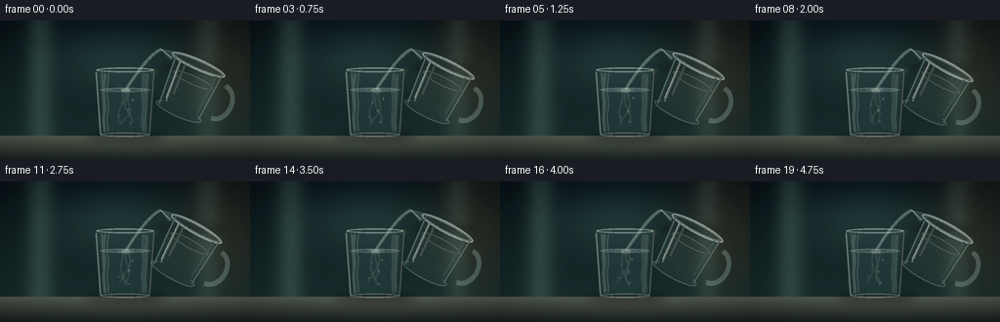
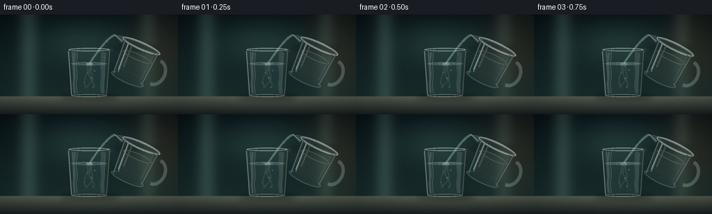
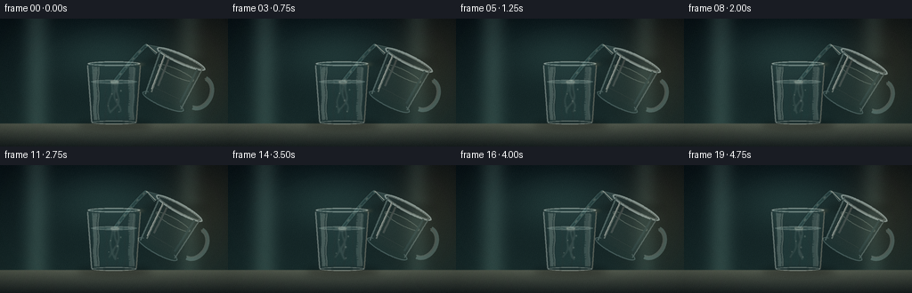
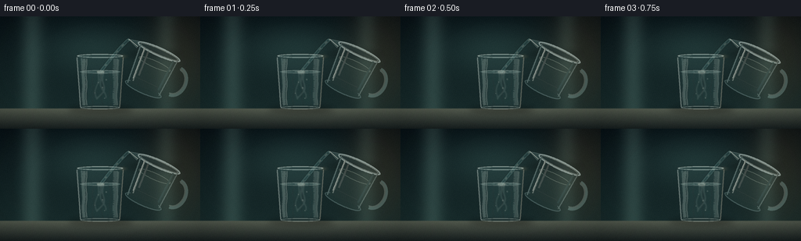
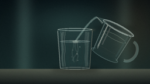
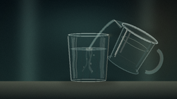
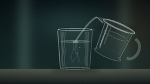

CODING AGENTS AS PIXEL WORLD MODELS
traex/DeepSeek-V4.1-Flash · material_0022
点击播放 · 原生 RGB 像素
逐轮保存的候选
回放视频、检查图与代码变化。
每份候选均可单独播放。实际图片检查记录在下方工具轨迹中。
候选 01播放与检查图
点击播放 · 原生 RGB 像素


展开代码变化
--- 上一保存版本
+++ 本次保存版本
@@ -0,0 +1,396 @@
+from pathlib import Path
+import math
+
+import numpy as np
+from PIL import Image, ImageDraw, ImageFilter
+
+import artifact_io
+
+
+WIDTH = 256
+HEIGHT = 144
+FRAMES = 20
+FPS = 4
+SS = 3
+W = WIDTH * SS
+H = HEIGHT * SS
+CASE = Path(__file__).resolve().parent
+
+
+def rgba():
+ return Image.new("RGBA", (W, H), (0, 0, 0, 0))
+
+
+def xy(x, y):
+ return (float(x) * W, float(y) * H)
+
+
+def sw(value):
+ return max(1, int(round(value * H / 144.0)))
+
+
+def composite(base, layer):
+ return Image.alpha_composite(base, layer)
+
+
+def blurred(layer, radius):
+ return layer.filter(ImageFilter.GaussianBlur(radius))
+
+
+def ellipse(draw, cx, cy, rx, ry, fill=None, outline=None, width=1):
+ draw.ellipse(
+ (cx * W - rx * W, cy * H - ry * H, cx * W + rx * W, cy * H + ry * H),
+ fill=fill,
+ outline=outline,
+ width=width,
+ )
+
+
+def background():
+ yy, xx = np.mgrid[0:H, 0:W].astype(np.float32)
+ xn = xx / W
+ yn = yy / H
+
+ top = np.array([8, 18, 22], dtype=np.float32)
+ mid = np.array([20, 39, 40], dtype=np.float32)
+ horizon = np.array([38, 55, 51], dtype=np.float32)
+ t = np.clip(yn / 0.82, 0.0, 1.0)
+ img = top[None, None, :] * (1 - t[:, :, None]) + mid[None, None, :] * t[:, :, None]
+ img = img * (1 - 0.22 * yn[:, :, None]) + horizon[None, None, :] * (0.22 * yn[:, :, None])
+
+ # A broad cool studio light behind the vessels.
+ gx = (xn - 0.47) / 0.36
+ gy = (yn - 0.28) / 0.31
+ glow = np.exp(-(gx * gx + gy * gy) * 1.8)
+ img += glow[:, :, None] * np.array([18, 27, 24], dtype=np.float32)
+
+ # Narrow warm edge light from the right.
+ warm = np.exp(-((xn - 0.91) / 0.18) ** 2 - ((yn - 0.34) / 0.52) ** 2)
+ img += warm[:, :, None] * np.array([21, 11, 3], dtype=np.float32)
+
+ # Soft vertical panels keep the background from reading as a flat gradient.
+ left_panel = np.exp(-((xn - 0.16) / 0.055) ** 2)
+ right_panel = np.exp(-((xn - 0.83) / 0.050) ** 2)
+ img += (left_panel * 3.0 + right_panel * 2.0)[:, :, None] * np.array([8, 10, 9])
+
+ table_y = 0.815
+ table_mask = np.clip((yn - table_y) / 0.008, 0.0, 1.0)[:, :, None]
+ table_t = np.clip((yn - table_y) / (1 - table_y), 0.0, 1.0)[:, :, None]
+ table = np.array([82, 89, 77], dtype=np.float32) * (1 - table_t) + np.array(
+ [23, 31, 31], dtype=np.float32
+ ) * table_t
+ table += (0.035 * (1 - table_t) * np.exp(-((xn - 0.52) / 0.38) ** 2)[:, :, None]) * 30
+ img = img * (1 - table_mask) + table * table_mask
+
+ # Fine tonal texture, applied before the scene objects.
+ grain = (
+ np.sin(xx * 0.79 + yy * 0.27)
+ + np.sin(xx * 1.73 - yy * 0.41)
+ + np.sin(xx * 0.19 + yy * 2.31)
+ ) / 3.0
+ img += grain[:, :, None] * 1.25
+ return Image.fromarray(np.clip(img, 0, 255).astype(np.uint8), "RGB").convert("RGBA")
+
+
+def add_floor_shadows(base):
+ shadow = rgba()
+ d = ImageDraw.Draw(shadow)
+ ellipse(d, 0.505, 0.831, 0.165, 0.025, fill=(0, 0, 0, 120))
+ ellipse(d, 0.475, 0.824, 0.105, 0.017, fill=(0, 0, 0, 85))
+ ellipse(d, 0.764, 0.337, 0.145, 0.026, fill=(0, 0, 0, 80))
+ shadow = blurred(shadow, sw(4.0))
+ return composite(base, shadow)
+
+
+def glass_side(cx, y, half):
+ t = np.clip((y - 0.355) / (0.820 - 0.355), 0.0, 1.0)
+ return cx + half * (1.0 - 0.16 * t)
+
+
+def draw_target_glass_back(base, frame):
+ cx = 0.500
+ top = 0.352
+ bottom = 0.818
+ half_top = 0.116
+ ys = np.linspace(top + 0.004, bottom - 0.010, 80)
+ left = [(glass_side(cx, y, -half_top), y) for y in ys]
+ right = [(glass_side(cx, y, half_top), y) for y in reversed(ys)]
+ body_poly = [(x * W, y * H) for x, y in left + right]
+
+ back = rgba()
+ d = ImageDraw.Draw(back)
+
+ # The transparent body slightly lifts and cools the background.
+ d.polygon(body_poly, fill=(132, 185, 184, 16))
+ ellipse(d, cx, top, half_top, 0.017, fill=(120, 174, 172, 12), outline=(172, 219, 214, 65), width=sw(1.2))
+ ellipse(d, cx, bottom - 0.006, half_top * 0.86, 0.015, fill=(87, 138, 137, 25), outline=(161, 207, 202, 58), width=sw(1.1))
+
+ # Water occupies the lower two thirds of the tumbler.
+ water_top = 0.493
+ inner_ys = np.linspace(water_top, bottom - 0.014, 70)
+ inner_left = [(glass_side(cx, y, -half_top * 0.86), y) for y in inner_ys]
+ inner_right = [(glass_side(cx, y, half_top * 0.86), y) for y in reversed(inner_ys)]
+ water_poly = [(x * W, y * H) for x, y in inner_left + inner_right]
+ d.polygon(water_poly, fill=(108, 169, 167, 31))
+
+ # Slight depth bands and caustic columns make the water legible without tinting it.
+ for i, xoff in enumerate((-0.070, -0.034, 0.010, 0.051, 0.079)):
+ phase = frame * 0.22 + i * 1.37
+ points = []
+ for y in np.linspace(water_top + 0.010, bottom - 0.020, 30):
+ xx = cx + xoff + 0.004 * math.sin((y - water_top) * 37 + phase)
+ points.append((xx * W, y * H))
+ d.line(points, fill=(198, 231, 220, 12 + (i % 2) * 5), width=sw(1.0))
+
+ back = blurred(back, sw(0.35))
+ base = composite(base, back)
+
+ surface = rgba()
+ ds = ImageDraw.Draw(surface)
+ ellipse(ds, cx, water_top, half_top * 0.88, 0.014, fill=(159, 210, 204, 30), outline=(204, 235, 226, 96), width=sw(0.9))
+ ellipse(ds, cx, water_top + 0.002, half_top * 0.79, 0.009, outline=(236, 246, 235, 34), width=sw(0.7))
+ surface = blurred(surface, sw(0.28))
+ return composite(base, surface)
+
+
+def make_source_vessel(frame):
+ lw, lh = 330, 280
+ layer = Image.new("RGBA", (lw, lh), (0, 0, 0, 0))
+ d = ImageDraw.Draw(layer)
+
+ body = [(78, 73), (234, 66), (222, 226), (90, 231)]
+ d.polygon(body, fill=(130, 186, 183, 18))
+ d.ellipse((80, 210, 232, 245), fill=(107, 161, 159, 23), outline=(179, 216, 210, 70), width=4)
+
+ # Glycerin is almost colorless, but its dense body shows a restrained glassy fill.
+ fill = [(91, 121), (222, 116), (214, 220), (99, 225)]
+ d.polygon(fill, fill=(129, 172, 161, 24))
+ d.ellipse((91, 108, 222, 135), fill=(154, 192, 178, 19), outline=(211, 230, 213, 65), width=3)
+
+ # Handle and pouring lip.
+ d.arc((208, 91, 303, 212), 270, 90, fill=(174, 213, 206, 72), width=15)
+ d.arc((213, 98, 292, 202), 270, 90, fill=(229, 240, 228, 55), width=4)
+ d.polygon([(83, 61), (27, 75), (68, 92)], fill=(153, 200, 194, 42), outline=(207, 230, 221, 112))
+
+ # Thick rim, inner meniscus, and the vessel edges.
+ d.ellipse((64, 54, 242, 89), fill=(134, 184, 180, 20), outline=(220, 238, 229, 132), width=6)
+ d.ellipse((75, 60, 231, 83), outline=(243, 250, 239, 76), width=3)
+ d.line([(78, 74), (91, 229)], fill=(195, 226, 218, 78), width=5)
+ d.line([(232, 68), (221, 226)], fill=(212, 235, 226, 65), width=4)
+ d.line([(98, 80), (107, 214)], fill=(244, 248, 234, 83), width=5)
+ d.line([(217, 82), (210, 207)], fill=(120, 170, 168, 44), width=7)
+ d.line([(110, 196), (202, 198)], fill=(235, 243, 228, 25), width=3)
+
+ # The narrow bright side of the vessel is the strongest readable contour.
+ d.line([(96, 82), (103, 205)], fill=(247, 250, 237, 138), width=3)
+ d.line([(115, 87), (119, 186)], fill=(255, 252, 236, 45), width=7)
+ d.line([(29, 74), (69, 86)], fill=(255, 250, 233, 150), width=3)
+
+ angle = -(24.0 + min(frame, 8) * 0.55 + 0.7 * math.sin(frame * 0.75))
+ rotated = layer.rotate(angle, resample=Image.Resampling.BICUBIC, expand=True)
+
+ marker = Image.new("L", (lw, lh), 0)
+ md = ImageDraw.Draw(marker)
+ md.ellipse((28, 73, 32, 77), fill=255)
+ marker = marker.rotate(angle, resample=Image.Resampling.BILINEAR, expand=True)
+ arr = np.asarray(marker)
+ yy, xx = np.nonzero(arr > 64)
+ mx = float(xx.mean())
+ my = float(yy.mean())
+
+ desired = xy(0.646 + 0.002 * math.sin(frame * 0.4), 0.205)
+ left = int(round(desired[0] - mx))
+ top = int(round(desired[1] - my))
+ return rotated, left, top, (desired[0] / W, desired[1] / H)
+
+
+def stream_points(frame, spout, impact):
+ points = []
+ sway = 0.0035 * math.sin(frame * 0.9)
+ for i in range(80):
+ t = i / 79.0
+ eased = t ** 0.72
+ x = spout[0] + (impact[0] - spout[0]) * eased
+ x += sway * math.sin(math.pi * t) * (0.35 + 0.65 * t)
+ y = spout[1] + (impact[1] - spout[1]) * t
+ points.append((x * W, y * H))
+ return points
+
+
+def draw_stream_and_water(base, frame, spout):
+ impact = (0.503 + 0.0015 * math.sin(frame * 0.8), 0.493)
+ points = stream_points(frame, spout, impact)
+
+ stream = rgba()
+ d = ImageDraw.Draw(stream)
+ d.line(points, fill=(10, 25, 25, 55), width=sw(5.0), joint="curve")
+ d.line(points, fill=(143, 190, 184, 94), width=sw(3.6), joint="curve")
+ d.line(points, fill=(222, 237, 223, 92), width=sw(1.35), joint="curve")
+
+ # Moving glints reveal the viscous flow direction.
+ phase = (frame * 0.115) % 1.0
+ for k in range(5):
+ center = (phase + k * 0.205) % 1.0
+ start = max(0, int((center - 0.045) * 79))
+ end = min(79, int((center + 0.025) * 79))
+ if end > start:
+ d.line(points[start:end], fill=(255, 250, 225, 85), width=sw(1.0))
+ stream = blurred(stream, sw(0.35))
+ base = composite(base, stream)
+
+ # A clear plume curls downward because glycerin is denser than water.
+ plume = rgba()
+ dp = ImageDraw.Draw(plume)
+ for strand in range(3):
+ pts = []
+ phase = frame * 0.20 + strand * 1.9
+ for i in range(55):
+ t = i / 54.0
+ yy = 0.505 + t * (0.220 + strand * 0.008)
+ xx = impact[0] + (strand - 1) * 0.013
+ xx += (0.010 + strand * 0.004) * math.sin(t * 7.0 + phase) * t
+ xx += 0.017 * t * t * (1 if strand % 2 else -1)
+ pts.append((xx * W, yy * H))
+ dp.line(pts, fill=(205, 230, 219, 25 + strand * 4), width=sw(2.4))
+ dp.line(pts, fill=(242, 244, 226, 32), width=sw(0.65))
+
+ # A soft lens at the point of entry.
+ ellipse(dp, impact[0], impact[1] + 0.007, 0.018, 0.014, fill=(226, 239, 225, 28), outline=(243, 246, 229, 80), width=sw(0.8))
+ plume = blurred(plume, sw(0.65))
+ base = composite(base, plume)
+
+ ripples = rgba()
+ dr = ImageDraw.Draw(ripples)
+ for k, offset in enumerate((0.0, 0.45, 0.78)):
+ phase = ((frame / FPS) * 0.62 + offset) % 1.0
+ radius = 0.020 + phase * 0.108
+ alpha = int(78 * (1 - phase) ** 1.25)
+ if alpha > 2:
+ ellipse(
+ dr,
+ impact[0] + 0.002 * math.sin(frame + k),
+ impact[1] + 0.002 * k,
+ radius,
+ radius * 0.145,
+ outline=(207, 235, 224, alpha),
+ width=sw(0.85),
+ )
+ ellipse(dr, impact[0], impact[1], 0.019, 0.010, outline=(250, 246, 224, 92), width=sw(1.0))
+ ripples = blurred(ripples, sw(0.25))
+ return composite(base, ripples)
+
+
+def draw_target_glass_front(base, frame):
+ cx = 0.500
+ top = 0.352
+ bottom = 0.818
+ half_top = 0.116
+ front = rgba()
+ d = ImageDraw.Draw(front)
+
+ # Front edges are separated into cool and warm highlights.
+ left_pts = []
+ right_pts = []
+ for y in np.linspace(top + 0.012, bottom - 0.012, 70):
+ left_pts.append((glass_side(cx, y, -half_top) * W, y * H))
+ right_pts.append((glass_side(cx, y, half_top) * W, y * H))
+ d.line(left_pts, fill=(235, 247, 238, 112), width=sw(1.65))
+ d.line(right_pts, fill=(247, 233, 206, 82), width=sw(1.45))
+
+ # Interior side walls and a subtle bottom lens.
+ d.line([(glass_side(cx, top + 0.02, -half_top * 0.82) * W, (top + 0.02) * H),
+ (glass_side(cx, bottom - 0.025, -half_top * 0.82) * W, (bottom - 0.025) * H)],
+ fill=(209, 235, 226, 49), width=sw(2.0))
+ d.line([(glass_side(cx, top + 0.03, half_top * 0.80) * W, (top + 0.03) * H),
+ (glass_side(cx, bottom - 0.035, half_top * 0.80) * W, (bottom - 0.035) * H)],
+ fill=(213, 225, 208, 36), width=sw(2.4))
+
+ # Rim and base ellipses.
+ ellipse(d, cx, top, half_top, 0.017, outline=(240, 248, 238, 142), width=sw(1.75))
+ ellipse(d, cx, top + 0.0015, half_top * 0.93, 0.011, outline=(208, 237, 226, 55), width=sw(0.8))
+ ellipse(d, cx, bottom - 0.006, half_top * 0.86, 0.015, outline=(236, 245, 233, 100), width=sw(1.45))
+
+ # Broad, low-opacity streaks make the cylindrical glass read as transparent.
+ for xoff, alpha, width in ((-0.083, 42, 3.8), (-0.069, 65, 1.2), (0.073, 28, 4.5), (0.085, 43, 1.1)):
+ pts = []
+ for y in np.linspace(top + 0.025, bottom - 0.025, 60):
+ xx = cx + xoff + 0.0025 * math.sin((y - top) * 31 + frame * 0.08)
+ pts.append((xx * W, y * H))
+ d.line(pts, fill=(230, 240, 226, alpha), width=sw(width))
+
+ front = blurred(front, sw(0.28))
+ return composite(base, front)
+
+
+def add_bubbles(base, frame):
+ layer = rgba()
+ d = ImageDraw.Draw(layer)
+ bubbles = (
+ (0.531, 0.559, 0.0042, 0.21),
+ (0.488, 0.590, 0.0031, 0.37),
+ (0.514, 0.641, 0.0048, 0.53),
+ (0.476, 0.682, 0.0025, 0.68),
+ (0.520, 0.724, 0.0034, 0.82),
+ )
+ for i, (x, y, r, phase) in enumerate(bubbles):
+ yy = y + 0.006 * math.sin(frame * 0.55 + phase * 9)
+ xx = x + 0.003 * math.sin(frame * 0.32 + i * 1.8)
+ ellipse(d, xx, yy, r, r * 2.0, fill=(218, 235, 224, 15), outline=(236, 246, 232, 74), width=sw(0.7))
+ ellipse(d, xx - r * 0.25, yy - r * 0.65, r * 0.18, r * 0.28, fill=(255, 253, 235, 95))
+ layer = blurred(layer, sw(0.2))
+ return composite(base, layer)
+
+
+def add_atmosphere(base, frame):
+ glow = rgba()
+ d = ImageDraw.Draw(glow)
+ # Warm rim and small bloom points on the glass and the pouring lip.
+ ellipse(d, 0.617, 0.357, 0.026, 0.020, fill=(255, 214, 149, 14))
+ ellipse(d, 0.615, 0.357, 0.008, 0.005, fill=(255, 238, 194, 72))
+ ellipse(d, 0.503, 0.493, 0.026, 0.010, fill=(193, 233, 216, 16))
+ glow = blurred(glow, sw(1.6))
+ base = composite(base, glow)
+
+ # Gentle vignette.
+ arr = np.asarray(base.convert("RGB")).astype(np.float32)
+ yy, xx = np.mgrid[0:H, 0:W].astype(np.float32)
+ xn = xx / W - 0.5
+ yn = yy / H - 0.48
+ vig = np.clip(1.06 - 0.43 * (xn * xn * 1.1 + yn * yn * 0.78), 0.55, 1.0)
+ arr *= vig[:, :, None]
+ arr = np.clip(arr, 0, 255).astype(np.uint8)
+ return Image.fromarray(arr, "RGB").convert("RGBA")
+
+
+def render_frame(frame):
+ base = background()
+ base = add_floor_shadows(base)
+
+ source, left, top, spout = make_source_vessel(frame)
+ base = composite(base, source) if (left, top) == (0, 0) else base
+ if (left, top) != (0, 0):
+ source_canvas = rgba()
+ source_canvas.alpha_composite(source, (left, top))
+ base = composite(base, source_canvas)
+
+ base = draw_target_glass_back(base, frame)
+ base = draw_stream_and_water(base, frame, spout)
+ base = draw_target_glass_front(base, frame)
+ base = add_bubbles(base, frame)
+ base = add_atmosphere(base, frame)
+
+ final = base.convert("RGB").resize((WIDTH, HEIGHT), Image.Resampling.LANCZOS)
+ arr = np.asarray(final).astype(np.int16)
+ rng = np.random.default_rng(1000 + frame)
+ noise = rng.normal(0.0, 0.7, (HEIGHT, WIDTH, 1))
+ arr = np.clip(arr + noise, 0, 255).astype(np.uint8)
+ return arr
+
+
+def main():
+ frames = np.stack([render_frame(i) for i in range(FRAMES)])
+ artifact_io.save(frames, CASE)
+
+
+if __name__ == "__main__":
+ main()
候选 02播放与检查图
点击播放 · 原生 RGB 像素


展开代码变化
--- 上一保存版本
+++ 本次保存版本
@@ -89,7 +89,7 @@
+ np.sin(xx * 0.19 + yy * 2.31)
) / 3.0
img += grain[:, :, None] * 1.25
- return Image.fromarray(np.clip(img, 0, 255).astype(np.uint8), "RGB").convert("RGBA")
+ return Image.fromarray(np.clip(img, 0, 255).astype(np.uint8)).convert("RGBA")
def add_floor_shadows(base):
@@ -142,14 +142,14 @@
points.append((xx * W, y * H))
d.line(points, fill=(198, 231, 220, 12 + (i % 2) * 5), width=sw(1.0))
- back = blurred(back, sw(0.35))
+ back = blurred(back, sw(0.55))
base = composite(base, back)
surface = rgba()
ds = ImageDraw.Draw(surface)
ellipse(ds, cx, water_top, half_top * 0.88, 0.014, fill=(159, 210, 204, 30), outline=(204, 235, 226, 96), width=sw(0.9))
ellipse(ds, cx, water_top + 0.002, half_top * 0.79, 0.009, outline=(236, 246, 235, 34), width=sw(0.7))
- surface = blurred(surface, sw(0.28))
+ surface = blurred(surface, sw(0.38))
return composite(base, surface)
@@ -206,12 +206,12 @@
def stream_points(frame, spout, impact):
points = []
- sway = 0.0035 * math.sin(frame * 0.9)
+ sway = 0.0027 * math.sin(frame * 0.9)
for i in range(80):
t = i / 79.0
- eased = t ** 0.72
+ eased = t ** 0.86
x = spout[0] + (impact[0] - spout[0]) * eased
- x += sway * math.sin(math.pi * t) * (0.35 + 0.65 * t)
+ x += sway * math.sin(math.pi * t) * (0.45 + 0.55 * t)
y = spout[1] + (impact[1] - spout[1]) * t
points.append((x * W, y * H))
return points
@@ -223,9 +223,10 @@
stream = rgba()
d = ImageDraw.Draw(stream)
- d.line(points, fill=(10, 25, 25, 55), width=sw(5.0), joint="curve")
- d.line(points, fill=(143, 190, 184, 94), width=sw(3.6), joint="curve")
- d.line(points, fill=(222, 237, 223, 92), width=sw(1.35), joint="curve")
+ d.line(points, fill=(8, 22, 23, 61), width=sw(5.8), joint="curve")
+ d.line(points, fill=(139, 187, 180, 88), width=sw(4.2), joint="curve")
+ d.line(points, fill=(225, 239, 223, 98), width=sw(1.5), joint="curve")
+ d.line(points[2:], fill=(92, 143, 143, 38), width=sw(2.4), joint="curve")
# Moving glints reveal the viscous flow direction.
phase = (frame * 0.115) % 1.0
@@ -234,8 +235,8 @@
start = max(0, int((center - 0.045) * 79))
end = min(79, int((center + 0.025) * 79))
if end > start:
- d.line(points[start:end], fill=(255, 250, 225, 85), width=sw(1.0))
- stream = blurred(stream, sw(0.35))
+ d.line(points[start:end], fill=(255, 250, 225, 74), width=sw(1.15))
+ stream = blurred(stream, sw(0.45))
base = composite(base, stream)
# A clear plume curls downward because glycerin is denser than water.
@@ -251,12 +252,12 @@
xx += (0.010 + strand * 0.004) * math.sin(t * 7.0 + phase) * t
xx += 0.017 * t * t * (1 if strand % 2 else -1)
pts.append((xx * W, yy * H))
- dp.line(pts, fill=(205, 230, 219, 25 + strand * 4), width=sw(2.4))
- dp.line(pts, fill=(242, 244, 226, 32), width=sw(0.65))
+ dp.line(pts, fill=(205, 230, 219, 21 + strand * 4), width=sw(2.8))
+ dp.line(pts, fill=(242, 244, 226, 28), width=sw(0.7))
# A soft lens at the point of entry.
ellipse(dp, impact[0], impact[1] + 0.007, 0.018, 0.014, fill=(226, 239, 225, 28), outline=(243, 246, 229, 80), width=sw(0.8))
- plume = blurred(plume, sw(0.65))
+ plume = blurred(plume, sw(0.78))
base = composite(base, plume)
ripples = rgba()
@@ -264,7 +265,7 @@
for k, offset in enumerate((0.0, 0.45, 0.78)):
phase = ((frame / FPS) * 0.62 + offset) % 1.0
radius = 0.020 + phase * 0.108
- alpha = int(78 * (1 - phase) ** 1.25)
+ alpha = int(66 * (1 - phase) ** 1.35)
if alpha > 2:
ellipse(
dr,
@@ -273,7 +274,7 @@
radius,
radius * 0.145,
outline=(207, 235, 224, alpha),
- width=sw(0.85),
+ width=sw(0.9),
)
ellipse(dr, impact[0], impact[1], 0.019, 0.010, outline=(250, 246, 224, 92), width=sw(1.0))
ripples = blurred(ripples, sw(0.25))
@@ -294,8 +295,8 @@
for y in np.linspace(top + 0.012, bottom - 0.012, 70):
left_pts.append((glass_side(cx, y, -half_top) * W, y * H))
right_pts.append((glass_side(cx, y, half_top) * W, y * H))
- d.line(left_pts, fill=(235, 247, 238, 112), width=sw(1.65))
- d.line(right_pts, fill=(247, 233, 206, 82), width=sw(1.45))
+ d.line(left_pts, fill=(235, 247, 238, 105), width=sw(1.8))
+ d.line(right_pts, fill=(247, 233, 206, 78), width=sw(1.55))
# Interior side walls and a subtle bottom lens.
d.line([(glass_side(cx, top + 0.02, -half_top * 0.82) * W, (top + 0.02) * H),
@@ -311,14 +312,14 @@
ellipse(d, cx, bottom - 0.006, half_top * 0.86, 0.015, outline=(236, 245, 233, 100), width=sw(1.45))
# Broad, low-opacity streaks make the cylindrical glass read as transparent.
- for xoff, alpha, width in ((-0.083, 42, 3.8), (-0.069, 65, 1.2), (0.073, 28, 4.5), (0.085, 43, 1.1)):
+ for xoff, alpha, width in ((-0.083, 50, 4.5), (-0.069, 78, 1.45), (0.073, 34, 5.2), (0.085, 53, 1.25)):
pts = []
for y in np.linspace(top + 0.025, bottom - 0.025, 60):
xx = cx + xoff + 0.0025 * math.sin((y - top) * 31 + frame * 0.08)
pts.append((xx * W, y * H))
d.line(pts, fill=(230, 240, 226, alpha), width=sw(width))
- front = blurred(front, sw(0.28))
+ front = blurred(front, sw(0.36))
return composite(base, front)
@@ -326,18 +327,18 @@
layer = rgba()
d = ImageDraw.Draw(layer)
bubbles = (
- (0.531, 0.559, 0.0042, 0.21),
- (0.488, 0.590, 0.0031, 0.37),
- (0.514, 0.641, 0.0048, 0.53),
- (0.476, 0.682, 0.0025, 0.68),
- (0.520, 0.724, 0.0034, 0.82),
+ (0.531, 0.559, 0.0037, 0.21),
+ (0.488, 0.590, 0.0027, 0.37),
+ (0.514, 0.641, 0.0041, 0.53),
+ (0.476, 0.682, 0.0023, 0.68),
+ (0.520, 0.724, 0.0030, 0.82),
)
for i, (x, y, r, phase) in enumerate(bubbles):
yy = y + 0.006 * math.sin(frame * 0.55 + phase * 9)
xx = x + 0.003 * math.sin(frame * 0.32 + i * 1.8)
- ellipse(d, xx, yy, r, r * 2.0, fill=(218, 235, 224, 15), outline=(236, 246, 232, 74), width=sw(0.7))
- ellipse(d, xx - r * 0.25, yy - r * 0.65, r * 0.18, r * 0.28, fill=(255, 253, 235, 95))
- layer = blurred(layer, sw(0.2))
+ ellipse(d, xx, yy, r, r * 2.0, fill=(218, 235, 224, 11), outline=(236, 246, 232, 59), width=sw(0.7))
+ ellipse(d, xx - r * 0.25, yy - r * 0.65, r * 0.18, r * 0.28, fill=(255, 253, 235, 78))
+ layer = blurred(layer, sw(0.3))
return composite(base, layer)
@@ -359,7 +360,7 @@
vig = np.clip(1.06 - 0.43 * (xn * xn * 1.1 + yn * yn * 0.78), 0.55, 1.0)
arr *= vig[:, :, None]
arr = np.clip(arr, 0, 255).astype(np.uint8)
- return Image.fromarray(arr, "RGB").convert("RGBA")
+ return Image.fromarray(arr).convert("RGBA")
def render_frame(frame):
可观测工具轨迹
实际执行的命令与返回图片。
命令 1exit 0
/bin/bash -lc "pwd && rg --files -g 'prompt.txt' -g 'GENERATION_RULES.md' -g 'task_spec.json' -g '"'!**/.git/**'"'"
命令 2exit 0
/bin/bash -lc 'ls -la'
命令 3exit 0
/bin/bash -lc 'cat prompt.txt'
命令 4exit 0
/bin/bash -lc 'cat GENERATION_RULES.md'
命令 5exit 0
/bin/bash -lc 'cat task_spec.json'
命令 6exit 0
/bin/bash -lc "sed -n '1,260p' artifact_io.py && printf '\\n--- player ---\\n' && sed -n '1,260p' player_template.html"
命令 7exit 0
/bin/bash -lc "python - <<'PY'
import PIL, numpy
print('PIL', PIL.__version__, 'numpy', numpy.__version__)
try:
import scipy; print('scipy', scipy.__version__)
except Exception as e: print('no scipy', e)
PY"命令 8exit 1
/bin/bash -lc 'python generate.py'
命令 9exit 0
/bin/bash -lc 'python generate.py'
命令 10exit 0
/bin/bash -lc "find . -maxdepth 2 -type f -printf '%p %s bytes\\n' | sort"
命令 11exit 0
/bin/bash -lc "python - <<'PY' from PIL import Image import numpy as np for p in ['frames/00.png','frames/08.png','frames/19.png']: a=np.asarray(Image.open(p)).astype(float) print(p, 'mean', a.mean((0,1)).round(2), 'std', a.std((0,1)).round(2), 'p5',np.percentile(a,5),'p95',np.percentile(a,95)) PY"
命令 12exit 0
/bin/bash -lc 'python generate.py'
命令 13exit 0
/bin/bash -lc "python - <<'PY'
from pathlib import Path
import json, wave
import numpy as np
from PIL import Image
p=Path('.')
spec=json.loads((p/'task_spec.json').read_text())
z=np.load(p/'pixels.npz')['pixels']
files=sorted((p/'frames').glob('*.png'))
print('spec', spec)
print('pixels', z.shape, z.dtype, 'frame files', len(files))
for f in [files[0], files[10], files[-1]]:
im=Image.open(f)
print(f.name, im.size, im.mode)
print('html bytes', (p/'index.html').stat().st_size, 'ready flag', 'window.__pixelReady' in (p/'index.html').read_text())
PY"命令 14exit 0
/bin/bash -lc "python -m py_compile generate.py artifact_io.py && echo 'python compile: ok'"
命令 15exit 0
/bin/bash -lc 'git status --short 2>/dev/null || true'
视觉工具实际返回图片 1

视觉工具实际返回图片 2

视觉工具实际返回图片 3

视觉工具实际返回图片 4

视觉工具实际返回图片 5

视觉工具实际返回图片 6
保存候选 2 份；完成命令 15 次；可验证图片返回 6 张。原始 API 响应与完整日志保留在本地。